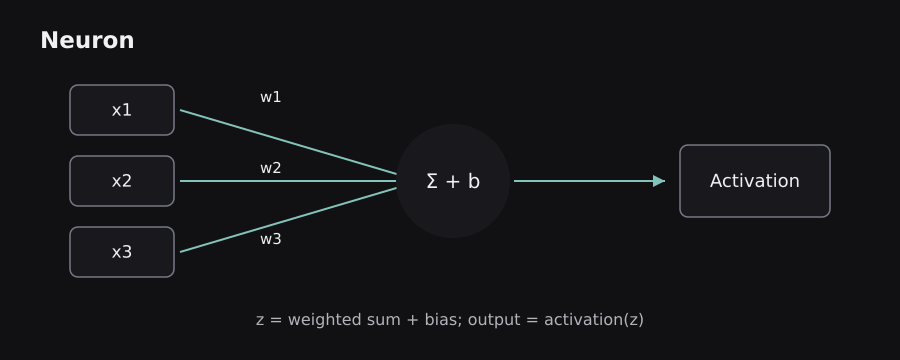
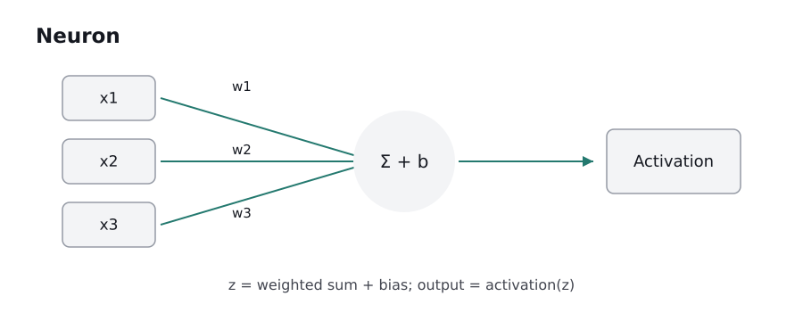
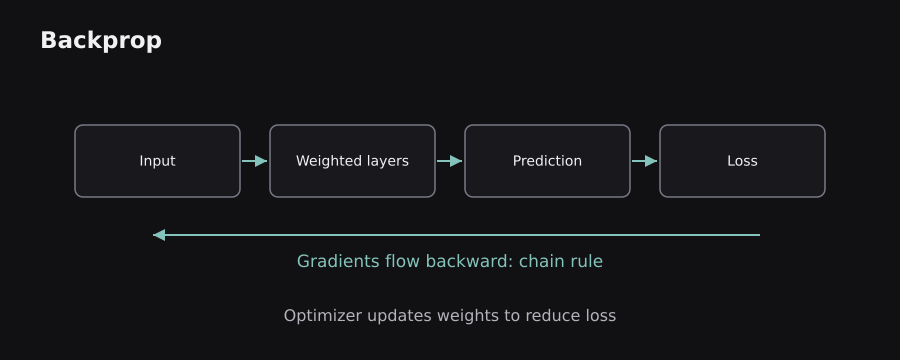
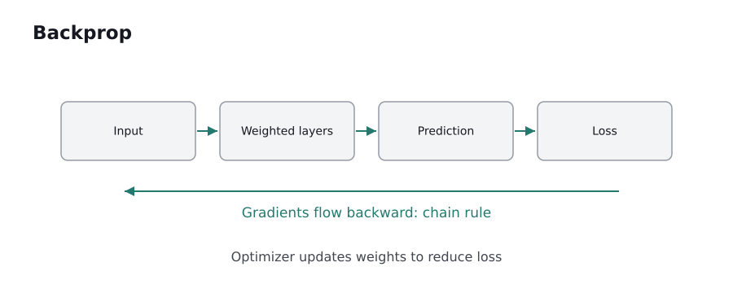

Neural networks are not mysterious digital brains. They are compositions of simple numerical operations whose parameters are adjusted using data. This chapter builds the smallest useful network and follows an error backward to see how learning happens.
3.0 — The artificial neuron: weighted evidence plus a bias
A neural-network neuron receives numbers, multiplies each by a learned weight, adds a bias, then applies an activation function. The calculation is z = w·x + b; a = g(z). The weight controls the contribution of an input, the bias shifts the operating point, and the activation controls what can pass to the next layer.
Worked example: let an input contain study hours 4 and prior score 6, with weights 0.5 and 0.2, and bias −1. The neuron first computes z = 4×0.5 + 6×0.2 − 1 = 2.2. If activation is ReLU, which returns max(0,z), the output is 2.2. For z = −0.5, the same ReLU would output 0.
An early perceptron uses a hard threshold, outputting one of two classes. It can learn linearly separable categories, but a lone threshold unit cannot represent arbitrary curved or disconnected boundaries. Modern networks use differentiable or almost-everywhere differentiable activations to support gradient-based updates.
The word neuron is an analogy, not a biological equivalence. Real nerve cells have rich time-dependent electrochemical behavior. Here a neuron is a parameterized mathematical function. Its power comes from arranging many such functions into layers and training them together.
 
3.1 — Why a network needs hidden layers and nonlinearity
A layer transforms a collection of input numbers into output numbers. A dense layer connects every input to every output. A neural network often consists of an input representation, one or more hidden layers, and an output layer. “Hidden” simply means its activations are intermediate rather than directly observed as input or final prediction.
Consider the XOR relationship: output is 1 when exactly one of two binary inputs is 1, otherwise 0. The positive examples are (0,1) and (1,0), while (0,0) and (1,1) are negative. No single straight line cleanly separates those two groups. Multiple nonlinear units can create internal features that make XOR representable.
Critical detail: stacking only linear layers changes nothing fundamental. If one layer computes W₁x and a second computes W₂(W₁x), the result is another linear transformation (W₂W₁)x. Nonlinear activations between layers allow the network to represent more complex mappings.
A network may learn different useful internal patterns at different depths, but depth alone does not guarantee better learning. More parameters mean more computation and additional ways to overfit. Architecture and data must match the task.
3.2 — Activation functions: sigmoid, tanh, ReLU, and GELU
An activation function determines how a neuron transforms its weighted sum. Sigmoid squashes numbers to (0,1), useful for binary output probabilities when paired with an appropriate loss. Tanh squashes to (-1,1) and is zero-centered. ReLU is max(0,x), inexpensive and commonly effective inside hidden layers. GELU smoothly gates values by their magnitude and is used in many transformer feed-forward blocks.
Why not use sigmoid in every hidden unit? At very positive or negative inputs, its gradient becomes tiny, making earlier weights difficult to update through many layers. Tanh can also saturate. ReLU avoids saturation on the positive side but can leave units inactive for long periods when their inputs stay negative. Leaky ReLU allows a small negative-side slope.
Example: for input values [-2, 0, 3], ReLU gives [0, 0, 3]. Sigmoid maps those numbers to approximately [0.119, 0.5, 0.953]. A softmax is different: it normalizes a whole vector of class scores into values summing to 1. Softmax is often used for mutually exclusive multiclass outputs.
Choose an activation according to its position and loss. “Sigmoid outputs a probability” is only a statement about numerical range until model calibration and training conditions are considered.
3.3 — Forward propagation with real numbers
Forward propagation means evaluating a network from its inputs toward its outputs. Suppose we have two input features x=[2,1], two hidden units, and one output. The hidden layer first computes z₁=W₁x+b₁, applies an activation to obtain a₁, then the output layer computes z₂=W₂a₁+b₂ and its appropriate activation.
Take W₁=[[1,1],[−1,2]], b₁=[0,0], and ReLU. Then W₁x=[3,0], so a₁=[3,0]. With W₂=[[0.5,−1]] and b₂=0, the final raw score is 1.5. A sigmoid would turn that into approximately 0.818. Every result follows ordinary arithmetic; there is no hidden reasoning engine inside the forward pass.
A batch processes many samples at once. Shapes are important: with batch size 32, two input features, and 16 hidden units, input may have shape (32,2), hidden weights (2,16), and hidden outputs (32,16). The orientation differs in some libraries, so always follow the framework's documented convention.
Training repeatedly performs forward passes, calculates loss, computes gradients, and updates parameters. Inference performs the forward computations without the training update.
3.4 — The loss function turns wrong answers into a signal
A network cannot improve until we define what counts as a mistake. Regression may use MSE or MAE. A binary classifier commonly uses binary cross-entropy. A multiclass classifier commonly uses cross-entropy on logits, where logits are unnormalized class scores. The loss is a numerical teaching signal, not a measure of human understanding.
For a binary example with true label 1, predicting probability 0.9 gives a relatively small cross-entropy loss of about −log(0.9)=0.105. Predicting 0.01 instead produces about 4.605: a confidently wrong prediction is strongly penalized. If a classifier outputs two raw logits, a stable library loss usually combines softmax and log operations internally to avoid numerical overflow and underflow.
Dataset loss normally aggregates across samples. It can combine extra terms, such as weight-decay penalties or auxiliary objectives. Training loss decreasing only proves the model is fitting the optimization signal better on that data; evaluation is needed to see whether generalization improves.
A practical rule is to match the final layer, target encoding, and loss. For example, passing already softmaxed probabilities into a loss expecting logits can make numerical behavior or gradients worse.
3.5 — Derivatives, chain rule, and backpropagation
Backpropagation efficiently computes how the loss changes with respect to each trainable parameter. Start with a simple composition: z = wx+b, a=g(z), and L=loss(a,y). The chain rule gives ∂L/∂w = (∂L/∂a)(∂a/∂z)(∂z/∂w). Since ∂z/∂w=x, the input contributes directly to the weight's sensitivity.
Imagine one weight has gradient +0.8. A small decrease in that weight should lower the loss locally, so gradient descent subtracts a multiple of 0.8. Another weight with gradient −0.2 is nudged upward. The direction is computed by differentiating the actual operations performed in the forward pass.
In a deep network, later layers pass error information backward through earlier transformations. Reverse-mode automatic differentiation, used by PyTorch, records operations and applies the chain rule backward efficiently. It is not necessary to write every derivative by hand for production models, but understanding the chain rule makes debugging much easier.
Analogy: if the final dish tastes too salty, tracing contributions backward identifies how much each ingredient affected the result. Unlike human cooking, backpropagation works with mathematically defined sensitivities and cannot find a useful signal through arbitrary nondifferentiable choices.
 
3.6 — Tensors, vectorization, and automatic differentiation
Training one sample at a time with Python loops is often slow. Vectorization packages repeated arithmetic into tensor operations that optimized libraries can run efficiently on CPUs or accelerators. Rather than applying a neuron separately to 1,000 rows, matrix multiplication processes the batch in one operation.
The core PyTorch pattern has four steps: compute a prediction, calculate a loss, request gradients, and update parameters. This minimal example checks the gradient of a scalar function rather than pretending to train a sophisticated model:
import torch
w = torch.tensor(2.0, requires_grad=True)
loss = (3 * w - 4) ** 2
loss.backward()
print(w.grad.item())
# 12.0
Because (3w−4)² has derivative 6(3w−4), substituting w=2 gives 12. PyTorch constructs an operation graph for this calculation and uses it to compute the gradient. In a training loop, an optimizer then updates the weight. Gradients accumulate unless they are reset, so ordinary loops call optimizer.zero_grad() before the next backward pass.
A tensor's dtype, device, and shape all matter. Mixed precision can save memory and time, but numerical stability needs attention. The framework performs differentiation; it does not independently decide whether the model or dataset makes sense.
3.7 — Optimizers, learning rates, and batch sizes
SGD updates weights using mini-batch gradients. Momentum carries a moving estimate of past update directions to reduce oscillation. Adam maintains moving estimates of both gradient magnitude and squared gradient, adapting the update to each parameter. AdamW separates weight decay from the adaptive gradient update and is a common deep-learning optimizer.
The learning rate is the update-size control. Too large can lead to unstable or divergent training; too small can waste compute or settle too early. Schedules may warm up the learning rate initially and then decay it. The batch size affects throughput, memory, and gradient noise. Larger batches are not inherently more accurate.
Epoch means one pass over the designated training dataset. Step means one optimizer update. If there are 10,000 training examples and batch size is 100, an epoch normally contains 100 batches, but gradient accumulation can change how many optimizer updates occur. These definitions prevent confusion when reading training logs.
Monitoring should include training loss, validation loss, learning rate, and, when practical, gradient norms. A decreasing training loss with worsening validation loss may indicate overfitting; exploding gradients can produce NaN values.
3.8 — Initialization, normalization, and unstable gradients
Weights usually start from random values rather than all being identical. If every neuron in the same layer begins with equal weights, it can receive identical gradients and remain redundant. Initialization schemes such as Xavier/Glorot and He/Kaiming choose scales designed to keep signals better behaved through layers with certain activations.
Vanishing gradients occur when repeated multiplications produce extremely small sensitivity signals. Exploding gradients occur when repeated multiplications produce excessively large ones. These problems arise in deep networks and recurrent architectures. Better initialization, normalization, residual connections, activations, and gradient clipping can help, although no trick eliminates every training failure.
Batch normalization uses mini-batch statistics during training and tracked statistics at inference in common implementations. Layer normalization normalizes across selected features of each example; it is widely used in transformers because it does not rely on batch-level statistics in the same way.
A residual connection adds a block's input to its transformed output: y = x + F(x). Think of it as a shortcut through which information and gradients can flow. It makes deep optimization more manageable, but shapes must be compatible and skip connections do not automatically solve every architectural problem.
3.9 — Reading learning curves and choosing architecture
Training a useful network requires reasoning about failures. If training and validation losses are both high, a model may be underfitting, the features may be inadequate, or optimization may be broken. If training loss is low but validation loss rises, memorization or distribution mismatch is plausible. If both losses suddenly become NaN, check learning rate, gradients, precision, and invalid input values.
Dropout randomly suppresses some activations during training to discourage particular co-adaptations. Early stopping selects a stopping point using validation performance. Data augmentation produces label-preserving variations, which can increase effective training diversity when the transformations are valid. More network depth, dropout, or epochs are not universal remedies.
An effective debugging sequence compares against a trivial baseline, checks a tiny batch, verifies target encoding and loss shapes, watches gradient updates, and only then experiments with architectural complexity. Beware of adjusting decisions based repeatedly on the final test set.
Chapter synthesis: a deep network is a trainable composition of linear operations and nonlinear functions. Forward propagation makes predictions; a loss scores them; backpropagation finds derivatives; the optimizer changes weights. We are ready to see architectures designed for images, sequences, and representation learning.
Sources and further reading
These sources supplement the original explanations. The uploaded PDFs and cheatsheets informed the topic coverage; their illustrations and prose are not republished.